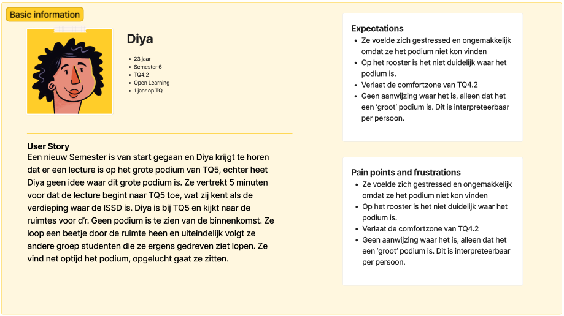
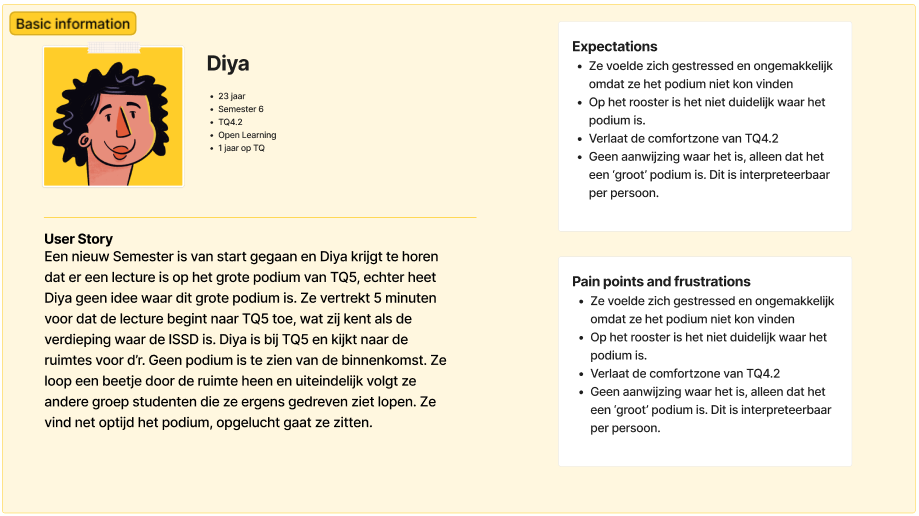

Het navigatieprobleem van de student
Onderzoeksvragen
- Wie wordt de focus van het project, de student, de docent of de bezoeker van Strijp TQ?
- Wat zijn de wensen van de student?
- Wat is de kern van het navigatieprobleem van de student?
- Welke informatie van Strijp TQ is relevant naar de student?
- Welk idee is relevant en voldoet aan de eisen van de student en de stakeholders?
Context
In de vorige fase werd er geconcludeerd dat er verschillende grote problemen zijn voor de gebruikers van Strijp TQ. Het probleem waarop gefocust wordt tijdens deze stage is het navigatie probleem. Om ervoor te zorgen dat er een oplossing hiervoor ontwikkeld kan worden, is het van belang om eerst te achterhalen of de student, docent of bezoeker wordt gekozen als de doelgroep. Als de focus duidelijk kan worden onderzocht wat de kern van het navigatieprobleem is voor hun. De focus van de doelgroep kan worden bepaald samen met de stakeholders. De kern van het probleem achterhalen heeft wat meer nodig. Met verschillende interviews en methodes om de gekozen doelgroep goed te begrijpen kan er worden geconcludeerd waar de pijnpunten van de navigatie liggen bij hun. Vanuit daar kan er worden gebrainstormd voor een idee dat het kernprobleem opgelost heeft.
Methodes
Tijdens deze fase worden er drie methodes gebruikt om de onderzoeksvragen te beantwoorden. Deze onderzoeksmethodes zijn gebaseerd op de CMD methods. Soms staan er meerdere methodes samen als één kopje, dit is gedaan omdat dat onderzoeksproces hetzelfde document en resultaat delen.
Interview Stakeholder
Er is een gesprek geweest met de stakeholders van het project om samen de empathy maps te bekijken en een focus op de doelgroep te kiezen. Samen met de stakeholders is bepaald dat de bezoekers en studenten van Strijp TQ de doelgroep voor het project kunnen zijn.
Expert Interview Design Commissie
Om te achterhalen wat voor een soort vormen de oplossing voor het navigatie probleem zou kunnen hebben binnen Strijp TQ, is er meegeluisterd met een samenkomst van mensen die het nieuwe design bepaald voor het gebouw. Hier zijn de volgende partijen geïnterviewd: “P. Guit die meer weet over hoe navigatieproblemen wordt opgelost bij andere scholen van het buitenland, A. van Dam die representatief stond voor 10% van de studenten binnen Fontys ICT die autisme of ADHD hebben en F. Wonders die de samenkomst hadden georganiseerd”. Deze interviews hebben het tijdelijke advies en de uiteindelijke vorm van het eindproduct gekozen.
Sketching - Storytelling - Wizard of Oz - Peer Review - Ideate - Co-Reflection
Op dit punt waren nog de bezoeker en student gekozen als een doelgroep. Tijdens dit onderzoek is er met behulp van sketchen, storytelling, de wizard of Oz en ideaten verschillende ideeën bedacht die samen met de stakeholders waren gepeer reviewed. Dit heeft uiteindelijk geleid tot ideeën, belangrijke conclusies en reflectie op het proces. Uit deze ideeën ontstonden verschillende persona’s en user journeys van een nieuwe doelgroep die resulteerde in helder aangeven wat precies het kernprobleem van het navigeren voor de studenten is. Dit proces bestond uit vele verschillende methodes omdat er zonder een concrete scope er is gaan concepten. Echter heeft dit tot de realisatie geleid dat er nog een belangrijke conclusie miste in het onderzoek.
Pitch
Het kernprobleem werd getoetst bij de stakeholders. Hierdoor werd er gevalideerd dat het project rondom dat concludeerde probleem moest worden opgelost.
Resultaten
Resultaat Interview Stakeholder
Tijdens dit interview is bepaald dat de focus voor nu kan liggen op het navigatie probleem van de bezoekers en de studenten van Strijp TQ. Zij zijn de groepen waar dit probleem het meest prominent is.
Resultaat Expert Interview Design Commisie
Uit de samenkomst met de experts is er voorgekomen dat 10% van Fontys ICT studenten ADHD hebben of een vorm van autisme. De gewenste situatie voor A. van Dam, de vertegenwoordiger voor de neurodiverse studenten van Fontys, is een product dat niet te veel binnen het gebouw afleidt. Geen felle kleuren of patronen binnen de alledaagse werksfeer die neurodiverse studenten afleiden.
Volgens P. Guit, docent binnen Fontys OCT, maakt een Universiteit in Denemarken gebruik van een Dynamische vloerprojectie om studenten te helpen met navigeren.
Resultaat Sketching - Storytelling - Wizard of Oz - Peer Review - Ideate - Co-Reflection
Tijdens dit onderzoek zijn er veel ideeën gegenereerd om het navigatie probleem voor de bezoekers en de studenten van Strijp TQ op te lossen.
De ideeën waren allemaal erg breed en onduidelijk. Hierdoor is samen met de stakeholders en semester coach besloten om de doelgroep alleen de studenten van Strijp TQ te maken. Volgens de eerdere onderzoeken en de verzonnen ideeën zijn dit de navigatie problemen die de studenten op Strijp TQ hebben:
- Studenten kunnen niet vanaf het trappenhuis zien waar specifieke locaties zijn op een verdieping.
- Studenten zijn niet bekend met het gebouw.
- Studenten worden niet goed begeleid door het gebouw.
- Studenten weten niet hoe ze vanaf hun locatie op de andere locatie komen binnen Strijp TQ.
- Studenten zijn te comfortabel met hun eigen locatie, waardoor ze de andere verdiepingen niet kennen.
- Studenten kunnen docenten niet vinden.
Vanuit deze problemen zijn er verschillende persona’s met daarbij hun User Journey gemaakt:
 

Hierdoor kon er een verband tussen de problemen worden gezien. Namelijk dat de studenten al vanaf het begin van hun semester niet het schoolgebouw kennen.
Resultaat Pitch
De stakeholders valideerde het feit dat er een oplossing moest komen voor het feit dat studenten aan het begin van het semester het gebouw moeten leren kennen.
Conclusie
In dit onderzoek is onderzocht wie de focus van het project wordt van Strijp TQ. De student, de docent of de bezoeker? Er is gekozen de doelgroep de studenten op Strijp TQ te kiezen als de nieuwe doelgroep. Zij zijn namelijk de grootste groep die er het langst verblijven. “Wat is de kern van het navigatieprobleem van de student?” Het kernprobleem van de student is dat zij vanaf het begin van het semester niet Strijp TQ leren kennen. Hierdoor hebben ze in de latere semesters moeite met navigeren binnen het gebouw. Wat zijn de wensen van de student en de stakeholders? De wensen van de stakeholder zijn om dit probleem op te lossen in een leuke, interactieve vorm die de studenten leert over de verschillende lecture plekken binnen TQ. De wens van de student is om op een gemakkelijke manier te leren over het gebouw, waardoor ze later in het semester geen frustraties meer hebben met het zoeken van bepaalde locaties.
Reflectie
Ik begon gelijk aan het concept van ideeën zonder echt het kernprobleem te hebben bepaald. Hierdoor kwamen veel onduidelijke en diverse concepten naar boven die verschillende problemen oplossen op verschillende manieren. Niet gelijk te veel concepten zonder dat het probleem goed gescoped is. Hierdoor is tijd verloren omdat ik eerst dacht oh ik heb een doelgroep nu zonder na te denken wat precies het kernprobleem is
Vervolg
De volgende stap is om vanuit het kernprobleem en de doelgroep ideeën te brainstormen. Hierdoor kan er een concept worden ontwikkeld dat het probleem oplost.
Lees het proces verder...